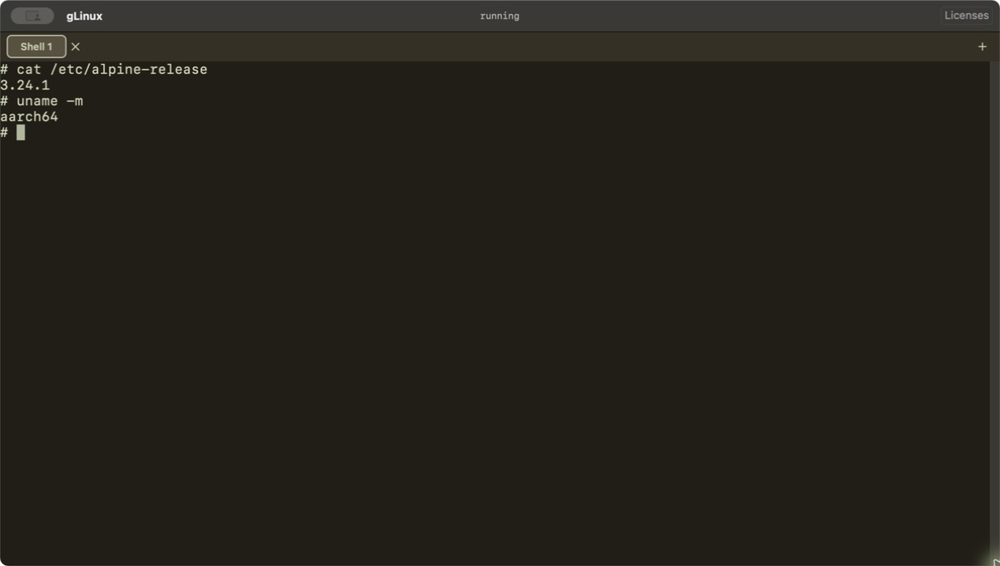

Ready when you are
Open the app and start using the included Alpine Linux command line. No Linux image download or setup step.
A ready-to-use Alpine Linux shell for your Mac.
Coming to Mac App Store
Open the app and start using the included Alpine Linux command line. No Linux image download or setup step.
Run an aarch64 Linux command line on an Apple Silicon Mac with macOS 14 or later.
Your shell files live in the app's local container. Commands can make outbound network connections when you choose.
Alpine Linux, ready on your Mac.
Apple Silicon · macOS 14 or later